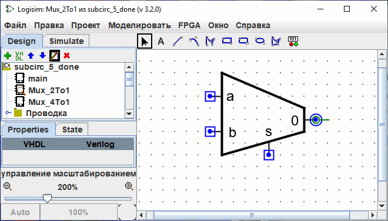
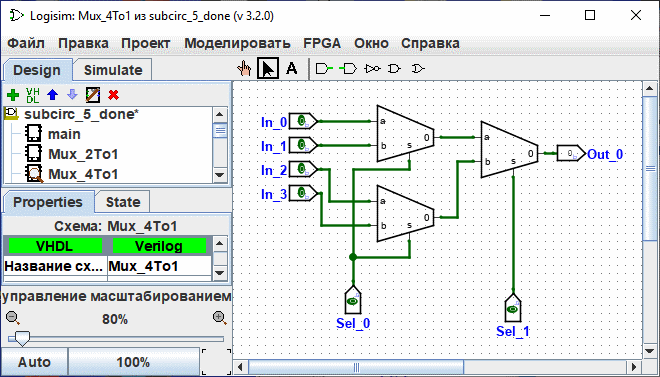
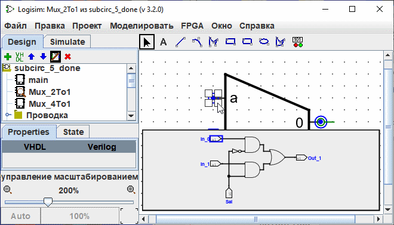

Настройка внешнего вида подсхемы
Внешний вид по умолчанию очень удобен, и фактически, Logisim существовал много лет без каких-либо других вариантов. Однако, если вы хотите, чтобы подсхема отображалась по-другому, вы можете выбрать пункт Редактировать внешний вид схемы
из меню «Проект», и Logisim-evolution переключится с привычного интерфейса редактирования чертежа на редактор внешнего вида. Вы также можете нажать на иконку в крайнем правом ( ) углу панели инструментов Навигатора.
Ниже показан пример редактирования внешнего вида мультиплексора 2:1 так, чтобы он отображался в виде обычной трапеции вместо стандартного прямоугольника.
) углу панели инструментов Навигатора.
Ниже показан пример редактирования внешнего вида мультиплексора 2:1 так, чтобы он отображался в виде обычной трапеции вместо стандартного прямоугольника.

При изменённом внешнем виде мультиплексора 2:1, чертёж мультиплексора 4:1 будет выглядеть следующим образом:

Редактор внешнего вида похож на традиционный векторный графический редактор, но содержит несколько специальных символов, определяющих поведение компонента на чертеже схемы. Эти символы не могут быть удалены:
-
Зелёный круг с выходящей линией — это якорь (
 ). Каждое условное графическое обозначение (УГО) имеет ровно один якорь, определяющий его базовую точку при размещении на холсте (обычно базовая точка привязывается к основному выходному контакту). Якорь задаёт положение этой точки относительно всего рисунка подсхемы.
). Каждое условное графическое обозначение (УГО) имеет ровно один якорь, определяющий его базовую точку при размещении на холсте (обычно базовая точка привязывается к основному выходному контакту). Якорь задаёт положение этой точки относительно всего рисунка подсхемы.
Якорь также определяет начальную ориентацию УГО; она указывается направлением линии, выходящей из круга. При размещении подсхемы на чертеже пользователь может поворачивать её; направление якоря показывает исходную ориентацию элемента. В нашем примере якорь направлен вправо, и каждый экземпляр подсхемы в мультиплексоре 4:1 тоже ориентирован вправо, поэтому они отрисованы в том же направлении, что и исходный внешний вид мультиплексора 2:1.
-
Голубые круги (
 ) и квадраты с точкой (
) и квадраты с точкой ( ) — это порты подключения подсхемы. Их количество строго соответствует числу входных и выходных контактов на внутреннем чертеже схемы. Входные порты обозначены квадратами, а выходные — кругами. Каждая точка подключения определяет место на УГО, куда подводится соединительный проводник.
) — это порты подключения подсхемы. Их количество строго соответствует числу входных и выходных контактов на внутреннем чертеже схемы. Входные порты обозначены квадратами, а выходные — кругами. Каждая точка подключения определяет место на УГО, куда подводится соединительный проводник.
При выделении порта Logisim-evolution подсвечивает синим цветом соответствующий ему контакт на миниатюрной схеме в нижнем правом углу рабочей области. Это помогает быстро определить назначение порта. Подсветка не отображается, если выделены все порты сразу.

Масштаб холста можно изменять с помощью сочетания Ctrl + колёсико мыши, кнопок лупы или ползунка в левом нижнем углу рабочей области. Рядом отображается текущий масштаб.
Панель инструментов содержит инструменты для рисования геометрических фигур. Удерживание клавиш-модификаторов (Ctrl, Alt, Shift) влияет на параметры создаваемых фигур:
Ctrl: привязывает конечные точки к сетке.
Shift: ориентирует линии под углами, кратными 45°, или делает фигуры правильными (квадрат, скруглённый квадрат, окружность).
Alt: рисует фигуры симметрично из центральной точки.
Ниже приведено описание инструментов редактора:

|
Инструмент «Выбор»: выделение, перемещение, копирование, вставка и масштабирование фигур. |

|
Инструмент «Текст»: добавление и редактирование текстовых меток. |

|
Инструмент «Линия»: рисование отрезков прямых линий. |

|
Инструмент «Кривая»: создание кривых Безье. Первый щелчок мыши и перетаскивание задают начало линии, второй щелчок и перетаскивание определяют конечную точку и кривизну. При выборе линии отображаются три контрольные точки. Удерживание Shift при щелчке по центральной контрольной точке делает кривую симметричной. Удерживание Alt при щелчке по ней проводит кривую непосредственно через контрольную точку. |

|
Инструмент «Ломаная»: создание последовательности соединённых отрезков. Вершины ломаной указываются щелчками мыши. Двойной щелчок или нажатие клавиши Enter завершают рисование фигуры. |

|
Инструмент «Прямоугольник»: рисование прямоугольника (или квадрата при удерживании Shift). |

|
Инструмент «Скруглённый прямоугольник»: рисование прямоугольника (или квадрата при удерживании Shift) со скруглёнными углами. |

|
Инструмент «Овал»: рисование овала (или окружности при удерживании Shift). |

|
Инструмент «Многоугольник»: создание замкнутого многоугольника произвольной формы. Каждый щелчок мыши добавляет новую вершину, а двойной щелчок замыкает фигуру. |

|
Динамические компоненты: инструмент для размещения динамических компонентов. Щелчок по холсту открывает диалоговое окно для выбора проецируемых индикаторов и органов управления из внутренних схем. |
Далее: Отладка подсхем.